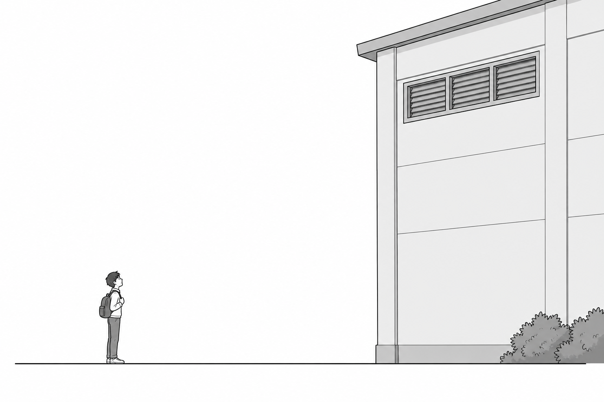
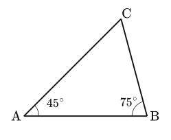

체육관 환기창을 관측할 위치를 정하려고 한다. 두 번째 그림의 관계도에서 A는 민준의 눈, G는 발밑, C는 환기창의 중심이며, E는 창 중심 바로 아래 지면이다. 지면은 수평이고 벽은 수직이다. B는 눈높이의 수평선과 벽이 만나는 점이다.
관측 기록
값
지면에서 환기창 중심까지의 높이 CE
12.8m
민준의 눈높이 AG
1.6m
환기창 중심을 올려다본 각 ∠BAC
58∘
각
sin
cos
tan
58∘
0.8480
0.5299
1.6003
위 삼각비 표를 이용할 때 민준의 발밑에서 벽까지의 수평거리 GE는? (소수점 아래 둘째 자리에서 반올림한다.)

①
6.5m
②
6.8m
③
7.0m
④
7.2m
⑤
11.2m
정답·해설 검토
③
눈높이 위의 높이는 CB=12.8−1.6=11.2(m)이다. 직각삼각형 ABC에서 tan58∘=ABCB이므로 표의 값을 대입하면 1.6003=AB11.2이다. 따라서 AB=11.2÷1.6003=6.998⋯이다. 지면과 눈높이의 수평선이 평행하므로 GE=AB이며, 소수점 아래 둘째 자리에서 반올림하면 7.0m이다. 정답은 ③이다.
19.7점
공원 측량 기록에서 두 측량 표지 A,B 사이의 거리만 빠져 있다. C는 관개 제어함의 위치이며, 세 위치를 이은 삼각형에 대한 기록은 다음과 같다.
측량 항목
기록
표지 B에서 제어함 C까지의 거리
306m
∠BAC
45∘
∠ABC
75∘
빠진 거리 AB를 구하고 풀이 과정을 쓰시오.

정답·해설 검토
90m
삼각형의 내각의 합으로 ∠ACB=180∘−45∘−75∘=60∘이다. 점 B에서 선분 AC에 내린 수선의 발을 H라 하자. 직각삼각형 BCH에서 BH=BCsin60∘=306×23=452(m)이다. 직각삼각형 ABH에서 sin45∘=ABBH이므로 AB=452÷22=90(m)이다. 따라서 두 표지 사이의 거리는 90m이다.